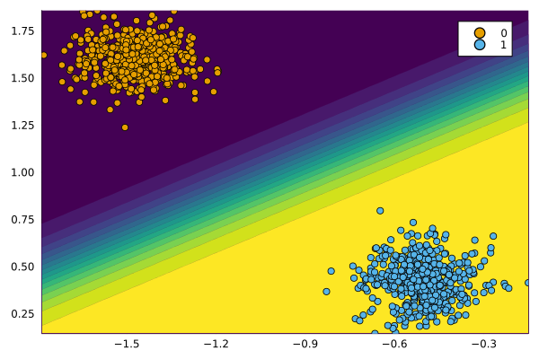
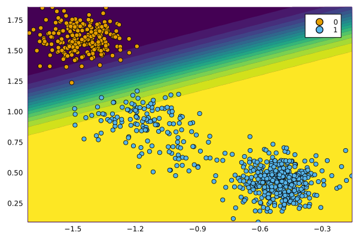

AlgorithmicRecourseDynamics
Documentation for AlgorithmicRecourseDynamics.jl.
AlgorithmicRecourseDynamics.jl is a small package for modeling Algorithmic Recourse Dynamics. It builds on CounterfactualExplanations, a package for generating counterfactual explanations.
Basic Usage
Below we first generate some synthetic data for a binary classification task and instantiate an instance of CounterfactualData.
N = 1000
xmax = 2
X, ys = make_blobs(
N, 2;
centers=2, as_table=false, center_box=(-xmax => xmax), cluster_std=0.1
)
ys .= ys.==2
X = X'
counterfactual_data = CounterfactualData(X,ys')We then define a simple model for the task and prepare it for use with CounterfactualExplanations.jl:
n_epochs = 100
model = Chain(Dense(2,1))
mod = FluxModel(model)To generate algorithmic recourse, we will use a simple generic generator:
generator = GenericGenerator()Finally we train our model on a subset of the data. The chart below shows the results.
data_train, data_test = Data.train_test_split(counterfactual_data)
Models.train(mod, data_train; n_epochs=n_epochs)
plt_original = plot(mod, counterfactual_data; zoom=0, colorbar=false)
display(plt_original)
Simulation
To model the dynamics of algorithmic recourse, we use simulations, in which we repeatedly select as subset of individuals from the non-target class, generate and implement recourse for all of them and finally retrain the model. To set this experiment up, we can use the code below:
models = Dict(:mymodel => mod)
generators = Dict(:wachter => generator)
experiment = set_up_experiment(data_train, data_test, models, generators)Finally, we just run the experiment using default parameter settings that specify the number of rounds, the proportion of individuals to select for recourse and related aspects:
run!(experiment)The chart below shows the data and predictions at the end of the simulation:
new_data = experiment.recourse_systems[1][1].data
new_model = experiment.recourse_systems[1][1].model
plt_original = plot(new_model, new_data; zoom=0, colorbar=false)
Related Research Paper 📝
The package was developed for a research project that investigates the dynamics of various counterfactual generators. You can find the details here.